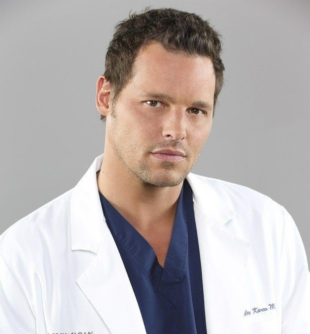

Personagens/Elenco
Meredith Grey (Ellen Pompeo)
Meredith Grey, é uma personagem fictícia da série de televisão de drama médico Grey's Anatomy.
Meredith é a protagonista e personagem-título da série e foi apresentada como interna cirúrgica no fictício Seattle Grace Hospital (mais tarde Seattle Grace-Mercy West Hospital e depois Grey Sloan Memorial Hospital), obtendo a posição de residente cirúrgica, e posteriormente, o cargo de atendente e, em 2015, atingindo o cargo de Chefe de Cirurgia Geral. Como filha da cirurgiã de renome mundial Ellis Grey, Meredith luta com a vida quotidiana de ser uma profissional competitiva. Pompeo reprisou seu papel de Meredith Grey no spin-off da série, Station 19.
Ellen Kathleen Pompeo é uma atriz, diretora e produtora norte-americana, mundialmente conhecida pela personagem Meredith Grey, protagonista da série Grey's Anatomy, criada por Shonda Rhimes. Ellen descobriu Grey's Anatomy após um longo período de não fazer nada na profissão de atriz. Seu agente sugeriu que ela fizesse um teste entre outros projetos.
Cristina Yang (Sandra Oh)
Cristina Yang, é uma personagem fictícia da série de televisão de drama médico Grey's Anatomy, exibida pela American Broadcasting Company (ABC) nos Estados Unidos. A personagem foi criada pela produtora da série Shonda Rhimes e é interpretada pela atriz Sandra Oh.
Sandra Miju Oh (Ottawa, 20 de julho de 1971) é uma atriz canadense. É mais conhecida pelos papeis de Cristina Yang na série de drama médico Grey's Anatomy (2005–2014), da ABC e de Eve Polastri, na série de espionagem da BBC Killing Eve (2018–presente). Ganhou dois prêmios do Globo de Ouro, quatro Screen Actors Guild e onze nomeações aos Prémios Emmy do Primetime.
Alex Karev (Justin Chambers)
Alexander "Alex" Michael Karev, é um personagem fictício da série de televisão da ABC Grey's Anatomy, interpretado pelo ator Justin Chambers. Introduzido como interno cirúrgico no fictício Seattle Grace Hospital. Karev finalmente obteve a posição de residente, tornando-se posteriormente um cirurgião pediátrico. Seus relacionamentos com os colegas Meredith Grey (Ellen Pompeo), Cristina Yang (Sandra Oh), Izzie Stevens (Katherine Heigl) e George O'Malley (T.R. Knight) formaram um ponto focal da série.
Justin W. Chambers (Springfield, Ohio em 11 de Julho de 1970) é um ator e ex-modelo norte-americano. Ficou conhecido por interpretar o personagem Alex Karev na série da ABC, Grey's Anatomy, até 11 de janeiro de 2020, quando deixou de interpretar o personagem e saiu da produção.
Izzie Stevens (Katherine Heigl)
Isobel "Izzie" Catherine Stevens, M.D. é uma personagem fictícia da série de televisão de drama médico Grey's Anatomy, que vai ao ar pela American Broadcasting Company (ABC) nos Estados Unidos. A personagem foi criada pela produtora da série Shonda Rhimes e foi interpretada pela atriz Katherine Heigl de 2005 a 2010. Apresentada como interna cirúrgica no fictício Seattle Grace Hospital, Izzie subiu ao nível de residente, enquanto seu relacionamento com seus colegas Meredith Grey (Ellen Pompeo), Cristina Yang (Sandra Oh), George O'Malley (T.R. Knight) e Alex Karev (Justin Chambers) formaram o ponto focal da série nas primeiras temporadas.
Katherine Marie Heigl (Washington, D.C., 24 de novembro de 1978) é uma atriz e ex-modelo americana. Ela começou sua carreira como modelo infantil na Wilhelmina Models antes de voltar sua atenção para a atuação, fazendo sua estréia no cinema em That Night (1992) e depois aparecendo em My Father the Hero (1994), bem como em Under Siege 2: Dark Territory (1995)) Heigl, então, conseguiu o papel de Isabel Evans na série de televisão da WB Roswell (1999–2002), pela qual recebeu indicações para Prêmio Saturno e Teen Choice Awards.
George O'Malley (T.R. Knight)
George O'Malley, M.D. é um personagem fictício da série médica de televisão Grey's Anatomy. O personagem foi criado pela produtora da série Shonda Rhimes. Ele foi interpretado pelo ator T.R. Knight de 2005 a 2009. O'Malley era um interno no Seattle Grace Hospital, onde trabalhou até tornar-se residente, enquanto mantem uma amizade com seus colegas Meredith Grey (Ellen Pompeo), Cristina Yang (Sandra Oh), Izzie Stevens (Katherine Heigl), Alex Karev (Justin Chambers) e mais tarde com Lexie Grey formando assim um dos principais focos da série.
T.R. Knight (Theodore Raymond Knight, Minneapolis, Minnesota, 26 de março de 1973) é um ator norte-americano mais conhecido por interpretar o Dr. George O'Malley na série Grey's Anatomy. Nos seus últimos dois anos em Minneapolis, fez parte da Companhia de atores do Teatro Guthrie.
 ABC, Shonda Rhimes Todos os Direitos Resevados
ABC, Shonda Rhimes Todos os Direitos Resevados